|
SuperPhot
unspecified
|


|
|
SuperPhot
unspecified
|
|
Fitting for position dependent values and derivatives of piecewise bicubic PSF models.
In the piecewise bicubic PSF model the PSF is split into a grid of cells and the intensity over each cell is assumed to be given by a bi-cubic function.
Requiring the continuity of the first order derivatives with respect to x and y as well as the cross derivative of the PSF dramatically reduces the number of free parameters. In fact the PSF is fully specified by the values, the x and y derivatives and the xy cross derivatives at the grid points.
Since we want the PSF to vary smoothly accross the image we will assume that these quantities are given by a polynomial expansion accross the image. Further, the grid points lying on the outside edge of the grid will be assumed to have a value and all derivatives equal to zero.
The grid giving the splitting of the PSF will be defined by a set of vertical boundaries with coordinates 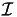 (i=0...M) relative to the source center and horizontal boundaries with coordinates 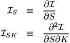 (j=0...N) relative to the source center. Let be the values, 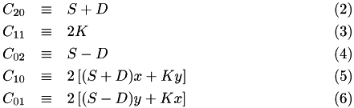 the horizontal derivatives, 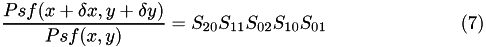 the vertical derivatives, and 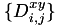 the cross derivatives of the PSF at the grid points. Let 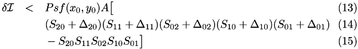 be a vector of these quantities excluding those on the outside grid edge.
We need to impose that the integral of the PSF over the entire grid is one (scaling this by a factor is degenerate with scaling the amplitudes for all sources by the inverse factor). That can be imposed by noting that the integral of the PSF over the grid is given by 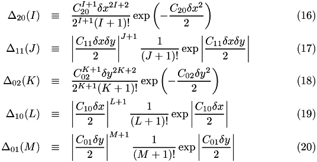 for some column vector 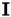. We then decompose 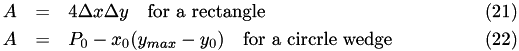 where 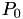 is the square norm of and 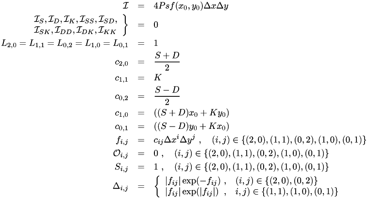 are an orthonormal basis for the space perpendicular to . Note that the SVD decomposition of 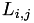 has 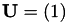, 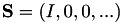 and the first columns of 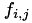 is 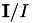 and the remaining columns can be used as the . We will then fit for the spatially dependent :
where and 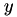 are the image coordinates of the center of the source for which the PSF is being constructed.
With these definitions, in order to fully specify PSF of each single source in an input image we need the quantities 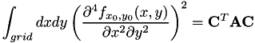, where i is in the range 0 to (M-2)(N-2)-1, and the ranges for k and l depend on the order of the polynomial used to describe the PSF variability over the image, so we need to fit for those.
Note that the coefficients of the bi-cubic polynomials specifying the PSF in each grid cell depend linearly on the values and derivatives at the grid nodes, which can be reconstructed from the quantities we fit for. In turn, the integrals of the PSF over CCD (sub-)pixels depends linearly on the bi-cubic coefficients.
So if we somehow knew the fluxes of all the sources as well as their positions, we could constuct a matrix ( ) such that:  predicts the values of all image pixels assigned to any source scaled by the flux of that source. Where 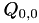 is the vector of the unknowns and 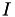 is the integral of a PSF specified entirely by over the corresponding pixel. So can be obtained by multiplying the rows of and 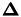 by the amplitude of the corresponding source and percforming a least squares fit. Since deriving the fluxes of the sources requires the PSF, we iterate. We begin by estimating the flux of each source by simply summing all the pixel values (in excess of the background) assigned to it or by aperture photometry. Then for each source we multiply the piece of the matrix that corresponds to that source's pixels by the current flux estimate and use the new matrix in a linear fit for the PSF. Finally, we update the flux estimates by using the new PSF model. This is repeated until the flux estimates stop changing too much.
predicts the values of all image pixels assigned to any source scaled by the flux of that source. Where 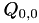 is the vector of the unknowns and 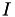 is the integral of a PSF specified entirely by over the corresponding pixel. So can be obtained by multiplying the rows of and 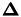 by the amplitude of the corresponding source and percforming a least squares fit. Since deriving the fluxes of the sources requires the PSF, we iterate. We begin by estimating the flux of each source by simply summing all the pixel values (in excess of the background) assigned to it or by aperture photometry. Then for each source we multiply the piece of the matrix that corresponds to that source's pixels by the current flux estimate and use the new matrix in a linear fit for the PSF. Finally, we update the flux estimates by using the new PSF model. This is repeated until the flux estimates stop changing too much.
Directly constructing is counter productive. For even modest grids (say 12x12 cells) and a reasonable number of sources used from a real image (say 3000 each with an average of 50 pixels assigned to it) and a reasonable expansion order (say 4) would result in unmanageable matrix sizes ( 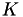 elements in our example). Such matrices are hard to even allocate let alone solve. However, is of a special form which makes this unnecessary. In order to perform a least squares fit we need to multiply the RHS by 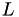 (let the result be denoted by  and then solve 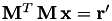. The matrix 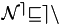 has only 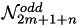 elements ( 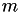 in our example), which is reasonable to allocate and invert. Even more, calculating 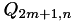 by first calculating is slower than the algorithm described below, and actually will dominate the computational time for non-trivial uses.
and then solve 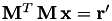. The matrix 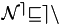 has only 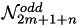 elements ( 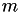 in our example), which is reasonable to allocate and invert. Even more, calculating 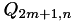 by first calculating is slower than the algorithm described below, and actually will dominate the computational time for non-trivial uses.
Let:
 ).
).With these definitions:
![\[ \mathbf{\Lambda}=\left(\begin{array}{ccccccc} \nwarrow & \uparrow & \nearrow & \nwarrow & \uparrow & \nearrow \\ \longleftarrow & \sum_{i=0}^S f_i^2 \Lambda^i_{1,1} (\mathbf{\kappa^i})^T \mathbf{\kappa^i} & \longrightarrow & \longleftarrow & \sum_{i=0}^S f_i^2 \Lambda^i_{1,2} (\mathbf{\kappa^i})^T\mathbf{\kappa^i} & \longrightarrow & \cdots \\ \swarrow & \downarrow & \searrow & \swarrow & \downarrow & \searrow \\ \\ \nwarrow & \uparrow & \nearrow & \nwarrow & \uparrow & \nearrow \\ \longleftarrow & \sum_{i=0}^S f_i^2 \Lambda^i_{2,1} (\mathbf{\kappa^i})^T\mathbf{\kappa^i} & \longrightarrow & \longleftarrow & \sum_{i=0}^S f_i^2 \Lambda^i_{2,2} (\mathbf{\kappa^i})^T\mathbf{\kappa^i} & \longrightarrow & \cdots \\ \swarrow & \downarrow & \searrow & \swarrow & \downarrow & \searrow \\ & \vdots & & & \vdots & & \ddots \end{array}\right) \]](form_106.png)
So the algorithm we will use for PSF fitting is as follows.
Overall Complexity: 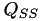
For each source:
2.1 construct the corresponding matrix and stack them together in . Complexity: large constant times .
2.2 For each source apply 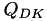 to the corresponding piece of the vector, storing the result as 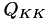 a part of a permanent vector 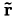 (will have a total length of 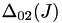). Complexity: 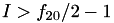.
2.3 Repeat \form#82 storing the result as
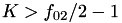.
2.4 Calculate
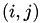 and store the result as part of the permament matrix 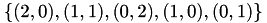 (a stack of the individual 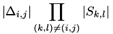 matrices). Complexity: .
Overall Complexity
complexity:
This is a simple linear regression for the background excesses of each source using its current best fit PSF.
In the case of fitting extremely sharp sources or very sparse images it is possible that there will not be enough stars or enough pixels within a star to constrain a grid, and yet there may be features of the PSF which require a fine grid to be used. In this case noise ends up being fitted and the resulting PSF has large amplitude high frequency components. This is clearly not physical and needs to be avoided in order to get stable photometry. In order to handle these cases piecewise bicubic PSF fitting support smoothing. This is implemented by adding the integral of the square of the second derivative in both x and y over the entire PSF to the function being minimized:
Adding the first term above, which is what is missing from the description above is actually quite simple. It can be expressed as the sum of terms containing constants and second order combinations of the PSF parameters. This in turn can be achieved by adding an extra matrix and a corresponding source with all zero fluxes. However, this extra matrix will not be multiplied by a , but instead by the average of that over all sources.
In order to add the first we need to write it as a sum of squares of the difference between a linear transformation of the parameters and some right hand side vector.
In the following let i and j be indices identifyin a grid cell (i is the grid column and j is the grid row) and let be the coefficient in front of term in the PSF funciton of source number over the cell. In what follows we will drop the i, j and s indices for shorter notation. Then:
![\begin{eqnarray*} \int_{grid} dx dy \left( \frac{\partial^4 f_s(x,y)}{\partial x^2 \partial y^2} \right)^2 = \sum_{i,j} \Bigg(&& \\ && 16 c_{2,2}^2 w h \\ && + 48 c_{2,3}^2 w h^3 \\ && + 48 c_{3,2}^2 w^3 h \\ && + 144 c_{3,3}^2 w^3 h^3 \\ && + 48 c_{2,2} c_{2,3} w h^2 \\ && + 48 c_{2,2} c_{3,2} h^2 w \\ && + 72 c_{2,2} c_{3,3} w^2 h^2 \\ && + 72 c_{2,3} c_{3,2} w^2 h^2 \\ && + 144 c_{2,3} c_{3,3} w^2 h^3 \\ && + 144 c_{3,2} c_{3,3} w^3 h^2 \\ \Bigg) \\ = \sum_{i,j} w h \Bigg(&& \\ && 16 c_{2,2}^2 \\ && + 48 c_{2,3}^2 h^2 \\ && + 48 c_{3,2}^2 w^2 \\ && + 144 c_{3,3}^2 w^2 h^2 \\ && + 48 c_{2,2} c_{2,3} h \\ && + 48 c_{2,2} c{3,2} w \\ && + 72 c_{2,2} c_{3,3} w h \\ && + 72 c_{2,3} c_{3,2} w h \\ && + 144 c_{2,3} c_{3,3} w h^2 \\ && + 144 c_{3,2} c_{3,3} w^2 h \\ \Bigg) \end{eqnarray*}](form_132.png)
where are the width and height of the grid cell. Since this is a quadratic form in , it can be written as:
where and A is a symmetric matrix which consists of matrices of the following form along its diagonal:
Since is symmetric it can be written as where is orthogonal and is diagonal containing the eigenvalues of . Which can clearly be written as with .
Further:
So we end up with:
To find the minimum differentiate:
![\begin{eqnarray*} \frac{\partial S}{\partial q_{\sigma,\mu}} &=& 2 \sum_{s=1}^S \sum_{c} \left[ \sum_{d,e} B_{c,d} \Phi_{d,e} \left( I_e/I^2 + \sum_{i,k} q_{i,k} \kappa^s_k \mathbf{e}_{i,e} \right) \right] \left[ \sum_{\delta,\varepsilon} B_{c,\delta} \Phi_{\delta,\varepsilon} \left( \kappa^s_\mu e_{\sigma,\varepsilon} \right) \right]\\ &=& 2 \sum_{s=1}^S \kappa^s_{\mu} \mathbf{e}_{\sigma}^T\mathbf{\Phi}^T\mathbf{B}^T \mathbf{B} \mathbf{\Phi} \left( \mathbf{I}/I^2 + \sum_{i,k} q_{i,k} \kappa^s_k \mathbf{e}_{i} \right)\\ &=& \frac{2}{I^2} \mathbf{e}_{\sigma}^T\mathbf{\Phi}^T\mathbf{A}\mathbf{\Phi} \mathbf{I} \sum_{s=1}^S \kappa^s_{\mu} + \frac{2}{I^2} \mathbf{e}_{\sigma}^T\mathbf{\Phi}^T\mathbf{A}\mathbf{\Phi} \sum_{s=1}^S \sum_{i,k} q_{i,k} \kappa^s_{\mu} \kappa^s_k \mathbf{e}_{i} \end{eqnarray*}](form_145.png)
The first term needs to be added to the vector and the matrix identified by the second term must be added to the matrix.
Conveniently, neither correction depends on the current values of the parameters, so we can compute those once for a given grid and simply add them at each step, thus not resulting in any significant overhead to the fitting. Further the non-smoothing algorithm already computes the bicubic coefficients over each grid cell for the selected basis vector so we have and for all .
 1.8.13
1.8.13